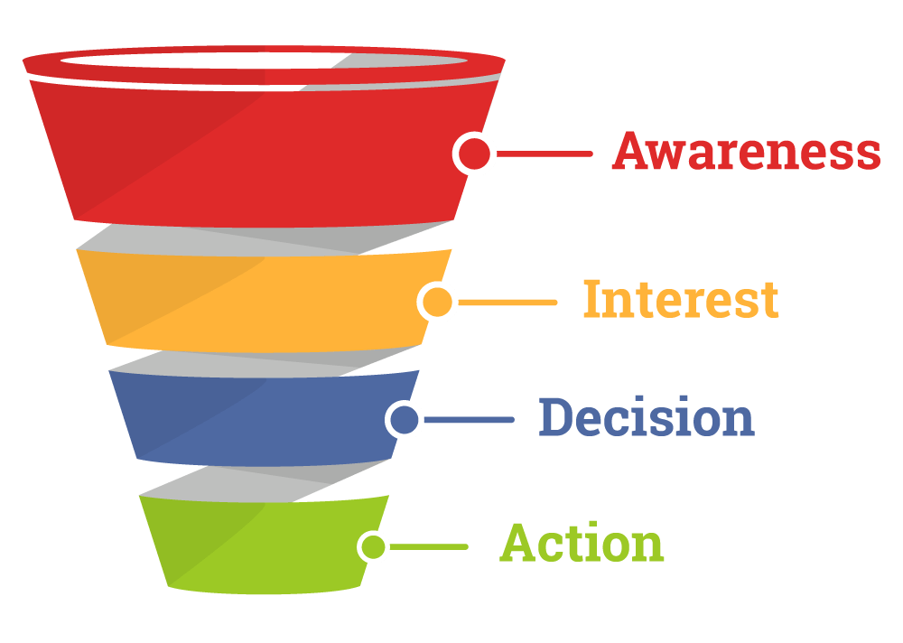

Прежде чем раскрыть сущность поставленной задачи, необходимо дать определение понятию «инновация».
Инновация – есть введенный в употребление новый или значительно улучшенный продукт (товар, услуга) или процесс, новый метод продаж или новый организационный метод в деловой практике, организации рабочих мест или во внешних связях [1]. Таким образом, продукт или услугу можно назвать инновационными, если они введены в эксплуатацию и по-новому удовлетворяют традиционную потребность или способны удовлетворить принципиально новую потребность.
Создание, освоение, распространение и использование инноваций возможны благодаря инновационному процессу и инновационной деятельности человечества. Й. Шумпетер в своей работе «Теория экономического развития» отмечает, что инновационный процесс определяет степень прогресса экономической системы [2].
Существует большое множество классификаций инноваций. Обратимся к классификации Ж.-Ж. Ламбена, классификационным признаком которой является источник инициирования инновации [3]. В данной классификации инновации разделяются на две основные группы [4]:
- инновации «втягиваемые спросом», основанные на анализе потребностей реальных и потенциальных потребителей;
- инновации «вталкиваемые лабораторией», основанные на фундаментальных или лабораторных исследованиях.
Статистические данные, собранные в результате исследования европейских и американских рынков, показывают, что 60-80% удачных инноваций инициируются потребителями, то есть являются «втягиваемыми»; 20-40% удачных инноваций исходят из лабораторий и являются «вталкиваемыми» [5]. Тем не менее, инновационные стратегии, основанные на фундаментальных исследованиях, имеют больше шансов привести к технологическому прорыву, который в свою очередь дает предприятию-инноватору конкурентное преимущество [там же]. Дальнейшая речь пойдет именно о «вталкиваемых» инновациях, так как они затрагивают более ценную проблемную область.
Рис. 2 – Графическое представление воронки продаж с этапами AIDA
Инновационная деятельность сопровождается большими рисками, так как нарушается базовый закон экономики о том, что спрос рождает предложение. В таком случае предложение стремится определить спрос, в некотором смысле, навязать обществу проблему и потребность в ее решении (из благих побуждений будем считать, что навязываемая проблема действительно существует и является временно неосознанной). Риск неприятия обществом инновации может заключаться в отсутствии у потенциальных потребителей понимания сущности инновации – как и в какой степени она способна удовлетворить их потребность.